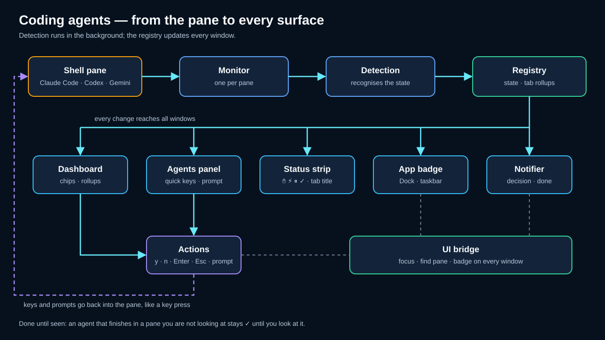
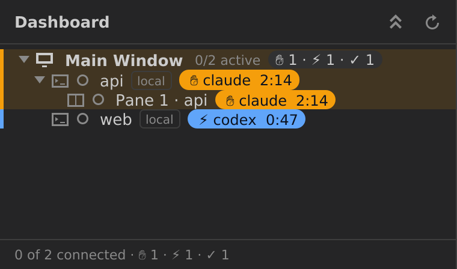
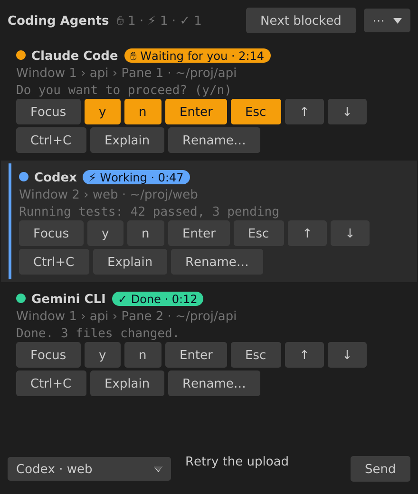
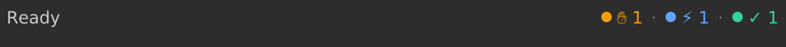
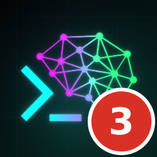

Coding-Agents¶
KorTTY erkennt, wenn ein terminalbasierter Coding-Agent – Claude Code, Codex oder Gemini CLI – in einer Ihrer lokalen Shell-Registerkarten läuft, und verfolgt, was er gerade tut: arbeiten, auf Ihre Antwort warten, fertig sein oder untätig an seiner Eingabeaufforderung stehen. Die Analyse findet vollständig innerhalb von korTTY auf Ihrem eigenen Rechner statt. Was sie findet, wird überall dort angezeigt, wo Sie hinsehen: als Symbol im Registerkartentitel, als Chips und Akzente im Dashboard, in einem andockbaren Coding-Agents-Panel mit Schnellantworten und Prompt-Feld, als Streifen in der Statusleiste, als Zähler am App-Symbol und – wenn Sie den Bereich gerade nicht ansehen – als Desktop-Benachrichtigung. Diese Seite erklärt, was erkannt wird, wie jede dieser Oberflächen funktioniert, wie Sie Dinge abschalten und wie Sie die Bildschirmregeln anpassen oder erweitern, wenn ein Agent seine Benutzeroberfläche ändert.

Was erkannt wird¶
Die Erkennung umfasst die drei unten aufgeführten Agents, gestartet aus einer Lokale Shell-Registerkarte – direkt, über einen Paketmanager-Wrapper wie npx oder als node-, bun- oder deno-Skript. SSH- und Mosh-Registerkarten werden nicht analysiert, weil der Agent dort auf dem entfernten Rechner läuft und korTTY seinen Prozess nicht sehen kann.
| Agent | Erkannte ausführbare Dateien |
|---|---|
| Claude Code | claude, claude-code |
| Codex | codex |
| Gemini CLI | gemini |
Jeder geteilte Bereich wird einzeln verfolgt, sodass eine Registerkarte mit zwei Bereichen einen arbeitenden Agent zeigen kann, während der andere auf eine Berechtigungsentscheidung wartet. Ein Bereich, in dem kein Agent läuft oder dessen Agent beendet wurde, hat einfach kein Erkennungsergebnis.
Zustände¶
Ein erkannter Agent befindet sich immer in genau einem von fünf Zuständen. Die Liste ist nach Dringlichkeit geordnet: Werden mehrere Bereiche zusammengefasst, gewinnt der dringlichste Zustand.
| Zustand | Bedeutung |
|---|---|
| BLOCKED | Der Agent wartet auf Sie – ein Berechtigungsdialog (Do you want to proceed?), eine Fragenauswahl oder eine (y/n)-Abfrage steht auf dem Bildschirm. |
| DONE | Der Agent ist fertig. Entweder zeigt er einen expliziten Abschlussbildschirm, den eine Regel erkennt, oder – weit häufiger – er ist von WORKING zu seiner leeren Eingabeaufforderung zurückgekehrt, während Sie seinen Bereich nicht angesehen haben. KorTTY hält ihn dann als DONE (✓) markiert, bis Sie den Bereich ansehen; sobald seine Registerkarte ausgewählt und sein Bereich im vordersten Fenster fokussiert ist, wird er IDLE. |
| WORKING | Der Agent denkt nach, führt ein Werkzeug aus oder streamt Ausgabe – typischerweise erkennbar an seiner Spinner-Zeile und dem Hinweis esc to interrupt. |
| IDLE | Der Agent läuft und sein Eingabefeld ist leer; er wartet auf Ihre nächste Anweisung. |
| UNKNOWN | Der Agent-Prozess ist vorhanden, aber der Bildschirm passt zu keiner Regel, und die Regeldatei verlangt ein striktes Ergebnis statt eines Fallbacks. |
Markierung im Dashboard¶

Öffnen Sie das Dashboard über Ansicht → Dashboard anzeigen (Ctrl+Shift+D), und jede Verbindungszeile, in der ein Coding-Agent läuft, zeigt hinter dem Protokoll-Badge einen Chip: das Zustandssymbol, den Kurznamen des Agents (oder den Alias, den Sie ihm gegeben haben) und – bei einem wartenden, arbeitenden oder fertigen Agent – wie lange er sich schon in diesem Zustand befindet (✋ claude 2:14). Ein untätiger Agent erhält einen gedämpften, nur umrandeten Chip, damit Sie trotzdem sehen, dass einer vorhanden ist. Eine Zeile, in der zusätzlich korTTYs eigener KI-Agent läuft, führt beide Markierungen in einem Chip zusammen.
Die Zeile selbst trägt am linken Rand einen farbigen Akzentbalken – bernsteinfarben, solange der Agent auf Sie wartet (die Zeile wird zusätzlich eingefärbt), blau, während er arbeitet, grün, wenn er fertig ist – und der Statuspunkt eines wartenden Agents pulsiert, solange das Fenster vorne liegt und Animationen aktiviert sind. Gruppen- und Umgebungszeilen über einer markierten Verbindung zeigen einen Rollup-Chip wie ✋ 1 · ⚡ 2 und übernehmen den Akzent ihres dringlichsten Kindes, und die Fußzeile hängt denselben Rollup an die Verbindungszahl an (3 von 5 verbunden · ✋ 1 · ⚡ 2), sodass ein wartender Agent auch dann sichtbar ist, wenn seine Gruppe eingeklappt ist.
Eine geteilte Registerkarte erhält unterhalb der Verbindung Bereichszeilen (Bereich 2 · api, benannt nach dem Arbeitsverzeichnis des Bereichs, wobei Ihr Heimatverzeichnis als ~ geschrieben wird, so wie die Shell es auch schreibt), eine pro Bereich, damit jeder Bereich einzeln erreichbar ist. Aufgeführt wird jeder Bereich, unabhängig davon, ob darin ein Agent erkannt wurde: dass in einem Bereich ein Agent läuft und im anderen nicht, ist der Normalfall, und nur den Bereich mit dem Agent zu zeigen würde die Hälfte der Registerkarte verbergen. Ein Bereich ohne Agent trägt weder Chip noch Akzent. Eine ungeteilte Registerkarte bekommt keine Bereichszeilen, denn ihre Verbindungszeile ist bereits der Bereich. Wird ein Agent blockiert, klappt das Dashboard den Baum einmal pro Übergang bis zu seiner Zeile auf – ein wartender Agent bleibt nie in einer eingeklappten Gruppe verborgen – und respektiert danach Alle einklappen.
Das Kontextmenü einer markierten Zeile ergänzt Bereich fokussieren, das die Registerkarte auswählt und genau diesen Bereich fokussiert, Im Coding-Agents-Panel anzeigen, das das Panel andockt und den Agent auswählt, und – solange der Agent auf Sie wartet – Enter senden, Esc senden und Unterbrechen (Strg+C), um den Dialog zu beantworten, ohne das Dashboard zu verlassen. Der Registerkartentitel zeigt dasselbe Symbol wie der Chip – ✋ wartend, ⚡ arbeitend, ✓ fertig, zusammengeführt mit dem Symbol von korTTYs eigenem KI-Agent, wo beides zutrifft.
Das Coding-Agents-Panel¶

Das Panel listet jeden erkannten Agent aller korTTY-Fenster an einer Stelle. Öffnen Sie es über Ansicht → Coding-Agents → Links andocken / Rechts andocken, schalten Sie es mit Ein-/Ausblenden (Ctrl+Alt+G) auf seiner zuletzt verwendeten Seite um, über das ⋯-Menü im Panel, über das Kontextmenü des Statusstreifens oder mit Im Coding-Agents-Panel anzeigen im Dashboard. Position und Breite bleiben über Neustarts hinweg erhalten. Agents, die auf Sie warten, stehen zuerst (der am längsten wartende oben), danach die arbeitenden, fertigen und untätigen in Fenster-, Registerkarten- und Bereichsreihenfolge; die Zeile des Bereichs, in dem Sie sich gerade befinden, trägt einen linken Akzent.Jede Zeile zeigt Statuspunkt und Namen, einen Zustands-Chip wie ✋ Wartet auf Sie · 2:14, die Ortszeile (Fenster 2 › api › Bereich 2 · ~/proj/api) und die letzte Bildschirmzeile, auf die eine Regel gepasst hat – die Evidenz. Darunter sitzen die Schnelltasten: Fokussieren holt den Bereich nach vorne, y, n, Enter und Esc beantworten einen Dialog (sie sind hervorgehoben, solange der Agent auf Sie wartet), ↑ und ↓ bewegen sich durch eine Fragenauswahl, Strg+C unterbricht, Erklären öffnet eine Schublade mit der vollständigen Erkennungserklärung (Agent, Zustand, passende Regel, Evidenz, Prozess und Zeit im Zustand), und Umbenennen… gibt dem Agent einen Alias, der seinen Namen in jedem Chip, jeder Zeile und jeder Benachrichtigung ersetzt – ein leerer Alias stellt den Agent-Namen wieder her, und der Alias überlebt ein erneutes Verbinden, wird aber verworfen, wenn der Bereich geschlossen wird. Jede Taste geht an die eigene Terminalverbindung des Bereichs, genau so, als hätten Sie sie dort getippt; die Schaltflächen sind deaktiviert, solange der Bereich nicht verbunden ist.
Das Prompt-Feld unten sendet längeren Text an den in der Zielliste ausgewählten Agent: Enter sendet, Shift+Enter fügt einen Zeilenumbruch ein. Eine einzelne Zeile wird gefolgt von Enter gesendet. Ein mehrzeiliger Prompt wird in Bracketed Paste eingebettet – der Agent erhält ihn so als einen eingefügten Block statt als mehrere abgeschickte Zeilen –, aber nur, wenn dieser Agent Bracketed Paste eingeschaltet hat, was Claude Code, Codex und Gemini CLI an ihrer Eingabeaufforderung alle tun; andernfalls werden die Zeilen wie getippt gesendet. Zwei Prompts werden mit einer Meldung in der Statuszeile des Panels abgelehnt, statt gesendet zu werden: Solange der Agent auf eine Entscheidung wartet, bleibt die Schaltfläche Senden deaktiviert, weil der Text im Berechtigungsdialog landen würde – beantworten Sie ihn zuerst mit y, n, Enter oder Esc; und ein Prompt, dessen erste Zeile mit korTTYs eigenem KI-Kürzel beginnt (dem unter Einstellungen → KI konfigurierten Befehlsnamen, standardmäßig agent), wird zurückgewiesen, weil korTTYs Kürzelfilter diese Zeile an seinen eigenen KI-Agent statt an den Coding-Agent umleiten würde – formulieren Sie die Zeile um. Fehler einer Schnelltaste oder eines Prompts (Bereich geschlossen, nicht verbunden, Schreiben fehlgeschlagen) erscheinen für einige Sekunden in derselben Statuszeile, nie als Dialog, und ein erfolgreicher Versand bestätigt mit An Claude Code gesendet.
Die Schaltfläche Nächster wartender in der Kopfzeile des Panels springt zum nächsten Agent, der auf Sie wartet, über alle Fenster hinweg und mit Umlauf; es ist dieselbe Aktion wie Ctrl+Alt+N und ein Klick auf den Statusstreifen.
Statusstreifen¶

Das rechte Ende der Statusleiste zeigt einen kompakten Streifen, solange mindestens ein Coding-Agent bekannt ist: bis zu drei Chips für wartende, arbeitende und fertige Agents (✋ 1 · ⚡ 2 · ✓ 1, Nullwerte werden weggelassen), wobei der Punkt der wartenden pulsiert, solange das Fenster vorne liegt. Ein Klick springt zum nächsten Agent, der auf Sie wartet – oder, wenn keiner wartet, zum ersten Agent in Anzeigereihenfolge –, und ein Rechtsklick bietet Ein-/Ausblenden für das Panel und Nächster wartender Agent. Der Tooltip fasst die Zähler zusammen. Der Streifen verschwindet zusammen mit der Statusleiste, wenn Sie diese unter Ansicht ausblenden.
App-Symbol-Badge und Benachrichtigungen¶

Die Zahl der Agents, die auf eine Entscheidung warten – über alle Fenster hinweg –, wird als Badge am App-Symbol angezeigt, damit Sie sie bemerken, während Sie in einer anderen Anwendung arbeiten. Wie das Badge gezeichnet wird, hängt von der Plattform ab: Unter macOS setzt die paketierte App das Dock-Badge; unter Windows zeichnet korTTY die Zahl in sein eigenes Taskleisten- und Titelleistensymbol; unter Linux sendet es das Launcher-Entry-Signal, das KDE Plasma, Ubuntu Dock und Dash to Dock am Launcher-Symbol darstellen – das braucht eine installierte Desktop-Datei (das deb-, rpm- oder pacman-Paket) und einen erreichbaren Sitzungsbus, mit dem korTTY direkt spricht. Eine unveränderte GNOME Shell ohne Dock-Erweiterung zeigt überhaupt keine Launcher-Zähler. Wo kein Symbol-Badge verfügbar ist – ein entpacktes Archiv,./gradlew run, ein nicht unterstützter Desktop –, weicht korTTY auf den Fenstertitel aus, der zu (2) KorTTY wird, solange zwei Agents warten, und bei null wieder zu KorTTY. Wird ein Agent blockiert, während kein korTTY-Fenster fokussiert ist, fordert die App zusätzlich einmal Aufmerksamkeit an (das Dock-Symbol hüpft, der Launcher-Eintrag wird als dringend markiert).
Eine Desktop-Benachrichtigung erscheint, wenn ein Agent eine Entscheidung braucht oder fertig wird, während Sie seinen Bereich nicht ansehen – also solange seine Registerkarte nicht die ausgewählte Registerkarte des vordersten Fensters ist oder sein Bereich nicht der fokussierte ist. Der Titel nennt den Agent (Claude Code braucht eine Entscheidung, Claude Code ist fertig), der Text zeigt Ort und Arbeitsverzeichnis, gefolgt von der passenden Bildschirmzeile. Ein blockierter Zustand muss einen Moment bestehen bleiben, bevor er gemeldet wird, ein Agent wird höchstens alle zehn Sekunden gemeldet, derselbe Übergang wird nie zweimal gemeldet, und für den Bereich, den Sie gerade ansehen, wird nichts angezeigt. Benachrichtigungen verwenden den eigenen Dienst des Betriebssystems: die Mitteilungszentrale unter macOS, die Infobereich-Sprechblase unter Windows und notify-send unter Linux (im Flatpak-Paket über den Host). Nichts verlässt diesen Rechner – der Text ist die Bildschirmzeile, die korTTY ohnehin gelesen hat.
Beide Oberflächen sind standardmäßig eingeschaltet und haben eigene Schalter unter Einstellungen → Terminal → Coding-Agents (siehe Erkennung aktivieren). Das Abschalten des Badges löscht es sofort; das Abschalten der Benachrichtigungen stoppt neue, ohne das Badge zu berühren.
Tastenkürzel¶
| Tastenkürzel | Aktion |
|---|---|
| Ctrl+Alt+G | Coding-Agents-Panel auf seiner zuletzt verwendeten Seite ein- oder ausblenden (standardmäßig rechts) |
| Ctrl+Alt+N | Zum nächsten Coding-Agent springen, der auf eine Entscheidung wartet, über Fenster hinweg |
| Enter / Shift+Enter | Im Prompt-Feld des Panels: Prompt senden / Zeilenumbruch einfügen |
Verwenden Sie unter macOS Cmd, wo Ctrl angezeigt wird.
So funktioniert die Erkennung¶
KorTTY geht erst dann von einem Agent aus, wenn zwei unabhängige Beobachtungen übereinstimmen – diese doppelte Evidenz verhindert, dass ein zufälliges claude in einem Shell-Skript oder ein zitiertes Prompt-Fragment Fehlalarme auslöst:
- Prozessbaum. Die lokale Shell des Bereichs hat eine bekannte Prozess-ID. KorTTY durchläuft die Nachkommen dieses Prozesses und sucht den neuesten lebenden, dessen Programmname – oder bei
node,bununddenodas ausgeführte Skript – zu einem der unterstützten Agents gehört. - Bildschirmregeln. Der aktuell im Bereich sichtbare Text (niemals der Scrollback) wird zusammen mit dem vom Agent gesetzten Fenstertitel und der Information, ob er auf den alternativen Bildschirm gewechselt hat, gegen die Regeldatei dieses Agents geprüft. Der erste Regeltreffer bestätigt den Prozess; von da an entscheiden die Regeln über den Zustand.
Der Bildschirm wird etwa 200 ms nach der ersten Änderung eines Ausgabeschwalls neu ausgewertet – weitere Änderungen innerhalb dieses Fensters werden zusammengefasst –, sodass ein langer Ausgabestrom eine Auswertung pro 200-ms-Fenster auslöst statt einer pro Zeile und ein kurzer Schwall genau eine. Ein langsamer Heartbeat bemerkt zusätzlich, wenn der Agent beendet wird, ohne etwas auszugeben, wenn die Registerkarte die Verbindung verliert oder wenn Sie die Erkennung abschalten. Regeln werden nach Priorität ausgewertet; die erste Regel, deren Bedingungen alle zutreffen, bestimmt den Zustand. Ist der Agent-Prozess bestätigt, aber keine Regel passt, wird der Fallback-Zustand der Regeldatei gemeldet (IDLE bei den mitgelieferten Dateien).
Datenschutz
Bildschirmtext wird ausschließlich innerhalb von korTTY, im Arbeitsspeicher, auf diesem Rechner analysiert. Nichts wird an einen Dienst gesendet, auf die Festplatte geschrieben oder an den KI-Assistenten weitergereicht – die Erkennung ist reine Mustererkennung gegen lokale Regeldateien. Wenn Sie lokale Shell-Bildschirme gar nicht untersuchen lassen möchten, schalten Sie die Funktion unter Einstellungen → Terminal → Coding-Agents ab.
Erkennung aktivieren¶
Die Erkennung ist standardmäßig eingeschaltet und wird über drei Schalter unter Einstellungen → Terminal, Abschnitt Coding-Agents, gesteuert. Eine Änderung wirkt sofort auf alle offenen Registerkarten – kein Neustart und kein erneutes Verbinden nötig.
| Einstellung | Typ | Werte | Standard | Gespeichert als |
|---|---|---|---|---|
| Coding-Agents (Claude Code, Codex, Gemini CLI) in lokalen Shell-Tabs erkennen | Schalter | — | Ein | codingAgentDetectionEnabled |
| Desktop-Benachrichtigung, wenn ein Coding-Agent eine Entscheidung braucht oder fertig wird, während Sie seinen Bereich nicht ansehen | Schalter | — | Ein | codingAgentNotificationsEnabled |
| Anzahl der auf eine Entscheidung wartenden Agents am App-Symbol anzeigen | Schalter | — | Ein | codingAgentAppBadgeEnabled |
Ist der Erkennungsschalter aus, durchläuft korTTY weder den Prozessbaum noch liest es den Bildschirm irgendeines Bereichs, und Dashboard-Markierungen, Panel, Streifen, Badge und Benachrichtigungen verstummen alle. Position und Breite des Panels sind keine Optionen des Einstellungsdialogs: Sie folgen dem Menü Ansicht → Coding-Agents und werden als codingAgentPanelPlacement (HIDDEN, LEFT oder RIGHT) und codingAgentPanelWidth gespeichert.
Eigene Regeln¶
Die Bildschirmregeln jedes Agents liegen in einer kleinen JSON-Datei. KorTTY liefert pro Agent eine mitgelieferte Datei und lässt Sie diese durch Ihre eigene Kopie in Ihrem Konfigurationsverzeichnis ersetzen:
~/.kortty/coding-agents/claude-code.json
~/.kortty/coding-agents/codex.json
~/.kortty/coding-agents/gemini-cli.json
Eine Überschreibung ersetzt die mitgelieferte Datei für diesen Agent als Ganzes – es gibt kein Zusammenführen, beginnen Sie also mit der mitgelieferten Datei und bearbeiten Sie sie. Die Datei muss eine reguläre Datei sein (symbolischen Links wird nicht gefolgt), und ihr kind muss zum Dateinamen passen. Eine ungültige Datei – fehlerhaftes JSON, ein unbekannter Schlüssel, ein fehlerhafter regulärer Ausdruck, eine doppelte Regel-ID oder eine Regel ohne jede Bedingung – wird mit einer Warnung im Protokoll ignoriert, und die mitgelieferten Regeln bleiben in Kraft, sodass ein Tippfehler die Erkennung nie stillschweigend abschalten kann. Regeldateien werden beim Start gelesen; starten Sie korTTY nach dem Bearbeiten einer Datei neu.
Schema der Regeldatei¶
Das Schema ist strikt: Jeder hier nicht aufgeführte Schlüssel ist ein Fehler, sodass falsch geschriebene Schlüssel gemeldet statt ignoriert werden.
{
"kind": "CLAUDE_CODE | CODEX | GEMINI_CLI",
"version": 1,
"comment": "optional free text, e.g. the agent version the rules were written against",
"fallbackState": "IDLE | WORKING | BLOCKED | DONE | UNKNOWN (optional, default IDLE)",
"rules": [
{
"id": "unique-rule-id",
"state": "WORKING | BLOCKED | DONE | IDLE",
"priority": 100,
"region": { "bottomNonEmptyLines": 8 },
"anyLineRegex": ["Java regex, matched per line"],
"regex": "Java regex, matched against the whole region",
"contains": ["literal text that must all be present"],
"notContains": ["literal text that vetoes the rule"],
"title": "Java regex matched against the window title",
"alternateScreen": false
}
]
}
| Feld | Erforderlich | Bedeutung |
|---|---|---|
kind |
ja | Der Agent, den diese Datei beschreibt; muss zum Dateinamen passen (claude-code, codex, gemini-cli). |
version |
ja | Schemaversion; derzeit immer 1. |
comment |
nein | Freitext für eigene Notizen, zum Beispiel gegen welche Agent-Version die Regeln geprüft wurden. |
fallbackState |
nein | Zustand, der gemeldet wird, solange der Agent-Prozess vorhanden ist, aber keine Regel passt. Standard ist IDLE; UNKNOWN macht die Erkennung strenger. |
rules |
ja | Die Liste der Regeln, ausgewertet nach absteigender priority; bei Gleichstand gilt die Reihenfolge in der Datei. Darf leer sein. |
rules[].id |
ja | Eindeutig innerhalb der Datei; Buchstaben, Ziffern, ., _ und -. Wird in Diagnosen angezeigt, damit Sie sehen, welche Regel gegriffen hat. |
rules[].state |
ja | Der Zustand, den diese Regel meldet: WORKING, BLOCKED, DONE oder IDLE. |
rules[].priority |
ja | Höhere Werte werden zuerst geprüft. |
rules[].region |
nein | { "bottomNonEmptyLines": N } beschränkt die Prüfung auf die unteren N nicht leeren Bildschirmzeilen; 0 oder fehlend bedeutet den ganzen Bildschirm. |
rules[].anyLineRegex |
nein | Reguläre Ausdrücke, die gegen jede Zeile der Region geprüft werden; die erste passende Zeile wird zum Beleg der Regel. |
rules[].regex |
nein | Ein regulärer Ausdruck, der gegen die mit Zeilenumbrüchen verbundene Region geprüft wird (mehrzeilig, Punkt passt auf Zeilenumbruch). |
rules[].contains |
nein | Literale Teilzeichenfolgen, die alle in der Region vorkommen müssen. |
rules[].notContains |
nein | Literale Teilzeichenfolgen, deren Vorkommen irgendwo in der Region die Regel aufhebt. |
rules[].title |
nein | Regulärer Ausdruck, der auf den vom Agent gesetzten Fenstertitel passen muss; passt nie, solange kein Titel empfangen wurde. |
rules[].alternateScreen |
nein | Falls vorhanden, muss das Alternativbildschirm-Flag des Bereichs diesem Wert entsprechen. |
Eine Regel muss mindestens eines von anyLineRegex, regex, contains, title oder alternateScreen angeben. Alle Bedingungen einer Regel müssen zutreffen, damit sie passt.
Reguläre Ausdrücke verwenden die Java-Syntax und werden mit Unicode-Groß-/Kleinschreibungsfaltung kompiliert; stellen Sie (?i) an den Anfang eines Musters, um es unabhängig von der Groß-/Kleinschreibung zu machen. Denken Sie daran, dass JSON verdoppelte Backslashes verlangt, \s wird also als "\\s" geschrieben. Muster in anyLineRegex werden innerhalb einer Zeile gesucht (sie müssen nicht die ganze Zeile treffen), und ^ und $ verankern an der Zeile. Die meisten Agents halten ihre Statuszeile und Eingabeaufforderung am unteren Bildschirmrand, daher hält eine kleine bottomNonEmptyLines-Region die Regeln schnell und verhindert, dass ältere Ausgabe passt.
Beispiel: mitgelieferte Claude-Code-Regeln¶
{
"kind": "CLAUDE_CODE",
"version": 1,
"comment": "Permission dialogs (Bash, Edit, Write, MCP) and the AskUserQuestion picker are BLOCKED; a tool call showing 'Running…' or the spinner status line with 'esc to interrupt' is WORKING; the empty input prompt with '? for shortcuts' is IDLE. The onboarding menus (theme picker, login method) intentionally match no rule. Claude Code does not use the alternate screen, so no rule depends on that flag. Re-verify against live sessions after an agent update.",
"fallbackState": "IDLE",
"rules": [
{
"id": "permission-prompt",
"state": "BLOCKED",
"priority": 1000,
"region": { "bottomNonEmptyLines": 20 },
"anyLineRegex": [
"Do you want to (proceed|make this edit|create|run|allow)",
"Do you want to allow this connection\\?",
"Would you like to proceed\\?"
],
"regex": "^\\s*[│┃]?\\s*❯?\\s*1\\.\\s*Yes\\b",
"notContains": ["esc to interrupt"]
},
{
"id": "question-picker",
"state": "BLOCKED",
"priority": 950,
"region": { "bottomNonEmptyLines": 20 },
"anyLineRegex": ["(?i)\\bEsc to cancel\\b"],
"regex": "(?i)Enter to (select|confirm)|Arrow keys to navigate|↑/?↓ to navigate|Review your answers",
"notContains": ["esc to interrupt", "Enter to set as default"]
},
{
"id": "working-tool-running",
"state": "WORKING",
"priority": 910,
"region": { "bottomNonEmptyLines": 12 },
"anyLineRegex": ["^\\s*⎿\\s+Running…"]
},
{
"id": "working-spinner",
"state": "WORKING",
"priority": 900,
"region": { "bottomNonEmptyLines": 8 },
"anyLineRegex": [
"(?i)esc to interrupt",
"^\\s*[✻✳✶✽✢·\\*]\\s+\\S.*…"
]
},
{
"id": "idle-prompt",
"state": "IDLE",
"priority": 100,
"region": { "bottomNonEmptyLines": 6 },
"anyLineRegex": ["^\\s*[│┃]?\\s*[❯>]\\s*$", "\\?\\s+for shortcuts"],
"notContains": ["esc to interrupt"]
}
]
}
Die beiden BLOCKED-Regeln kombinieren ein zeilenweises Muster mit einem regex über die gesamte Region, sodass ein Berechtigungsdialog nur gemeldet wird, wenn sowohl die Frage als auch ihre Option 1. Yes auf dem Bildschirm stehen, und eine Fragenauswahl nur zusammen mit ihrer Navigationsfußzeile – die Onboarding-Menüs einer frischen Installation zeigen eine ähnliche Liste, aber keine der beiden Fußzeilen, und dürfen nicht als blockiert zählen. Auch das notContains-Veto in den BLOCKED- und IDLE-Regeln ist wichtig: Während Claude Code arbeitet, bleibt seine Statuszeile zusammen mit älterem Dialogtext auf dem Bildschirm, und das Veto verhindert, dass die höher priorisierten Prompt-Regeln auf veraltete Zeilen anspringen.
Regeln pflegen¶
Agents ändern ihre Oberflächen häufig, und eine Regel, die letzten Monat gepasst hat, kann nach einem Update stillschweigend nicht mehr passen. Die mitgelieferten Regeln von KorTTY sind deshalb durch Bildschirm-Fixtures abgesichert: Für jeden Agent bewahrt das Repository aufgezeichnete Terminalbildschirme mit dem Zustand und der Regel auf, die sie liefern müssen, und die Testsuite schlägt fehl, sobald eine mitgelieferte Regel nicht mehr zu ihrem Fixture passt oder eine Regel gar kein Fixture hat. Wenn Ihnen ein falscher oder fehlender Zustand auffällt, ist der nützlichste Bericht der sichtbare Bildschirmtext des Bereichs in diesem Moment, der Agent samt Version und der von Ihnen erwartete Zustand – daraus werden im nächsten Release ein neues Fixture und eine Regelkorrektur. Bis dahin können Sie die Regel mit einer lokalen Überschreibungsdatei sofort für sich selbst korrigieren.
Das Repository liefert genau dafür einen Recorder mit: scripts/capture-coding-agent-fixtures.py führt einen Agent in einem Pseudo-Terminal aus und reicht Ihre Tastatur durch, sodass sich die Sitzung wie ein normales Terminal verhält. Drücken Sie F12 in jedem interessanten Moment – beim Berechtigungsdialog, beim Spinner, bei der leeren Eingabeaufforderung –, und der sichtbare Bildschirm wird in eine Fixture-Datei geschrieben; Ctrl+] beendet die Aufzeichnung. Jede Datei beginnt mit einer Zeile expect state=REVIEW rule=REVIEW: Tragen Sie dort den erwarteten Zustand und die Regel-ID ein und legen Sie die Datei unter src/test/resources/coding-agents/<kind>/ ab (claude-code, codex oder gemini-cli). Von da an sichert die Testsuite die Regel gegen diesen Bildschirm, und eine Regeländerung, die ihn brechen würde, fällt vor dem Release auf.
Agents per Skript steuern¶
Alles, was das Coding-Agents-Panel tut – Agents auflisten, ihren Zustand lesen, sie anweisen, ihre Rückfragen beantworten, sie umbenennen, einen neuen in einem geteilten Bereich starten – ist auch aus einem lokalen Skript oder von einem anderen Coding-Agent aus über korTTYs Steuerungs-API und deren Client kortty-cli erreichbar. Sie ist standardmäßig aus; die agent.*-Befehle brauchen einen erkannten Agent, also muss auch die Erkennung eingeschaltet sein.
Einschränkungen und Fehlerbehebung¶
- Flatpak. Im Flatpak-Paket läuft die lokale Shell über
flatpak-spawnauf dem Host, sodass die Prozess-ID, die korTTY hält, zum Helfer auf der Sandbox-Seite gehört und der Prozessbaum des Agents nicht sichtbar ist. In lokalen Flatpak-Shells wird kein Agent erkannt. - Remote-Clients als Shell-Befehl. Eine lokale Shell-Registerkarte, deren konfigurierter Shell-Befehl selbst
sshodermoshist, führt den Agent auf einem anderen Rechner aus; der Prozessbaum endet beim Client und es wird kein Agent erkannt. Dasselbe gilt für jede SSH- oder Mosh-Registerkarte. - Ungewöhnliche Wrapper. Ein Agent, der über einen Starter gestartet wird, den korTTY nicht kennt – ein eigenes Shell-Skript, das per
execin eine anders benannte Binärdatei wechselt, ein Container oder ein Terminal-Multiplexer außerhalb der Registerkarte – wird nicht identifiziert, weil der Programmname im Prozessbaum keinem bekannten Agent zugeordnet werden kann. - Falscher oder flackernder Zustand. Der Bildschirm des Agents hat sich geändert, oder ein Dialog wird auf eine Weise dargestellt, die die mitgelieferten Regeln nicht abdecken. Kopieren Sie die mitgelieferte Regeldatei nach
~/.kortty/coding-agents/<agent>.json, passen Sie das Muster an, starten Sie korTTY neu und melden Sie den Bildschirmtext, damit die mitgelieferten Regeln korrigiert werden können. - Gar kein Zustand, obwohl der Agent läuft. Prüfen Sie, dass der Schalter unter Einstellungen → Terminal → Coding-Agents eingeschaltet ist, dass die Registerkarte eine Lokale-Shell-Registerkarte ist, und suchen Sie im Protokoll nach einer coding-agents-Warnung – eine ungültige Überschreibungsdatei fällt auf die mitgelieferten Regeln zurück, aber eine mitgelieferte Regeldatei, die nie zu Ihrer Agent-Version passt, lässt den Agent unbestätigt.
- Kein Badge unter GNOME. Eine unveränderte GNOME Shell stellt keine Launcher-Zähler dar, und korTTY kann nicht erkennen, ob eine Dock-Erweiterung installiert ist, die es täte; die Zahl wird also gesendet, kann aber unsichtbar bleiben. Auf den Fenstertitel wird nur dort ausgewichen, wo korTTY sicher weiß, dass kein Symbol-Badge existiert (keine installierte Desktop-Datei, kein erreichbarer Sitzungsbus,
./gradlew run). - Keine Benachrichtigung, obwohl der Agent gewartet hat. Benachrichtigungen werden unterdrückt für den Bereich, den Sie gerade ansehen, für einen blockierten Zustand, der kürzer als einen Moment bestand, für eine zweite Meldung desselben Übergangs und innerhalb von zehn Sekunden nach der vorherigen für diesen Bereich; unter Linux muss
notify-sendim PATH liegen, und der Schalter unter Einstellungen → Terminal → Coding-Agents muss eingeschaltet sein. - Der Prompt wurde abgelehnt. Ein wartender Agent muss zuerst beantwortet werden (y, n, Enter oder Esc), und eine erste Zeile, die mit korTTYs eigenem KI-Kürzelbefehl beginnt, muss umformuliert werden – siehe Das Coding-Agents-Panel.